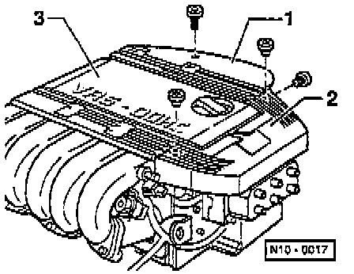
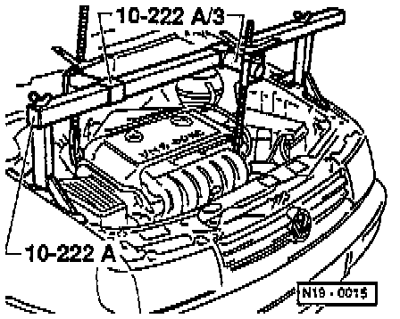
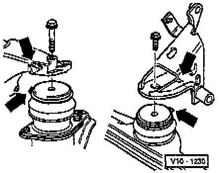
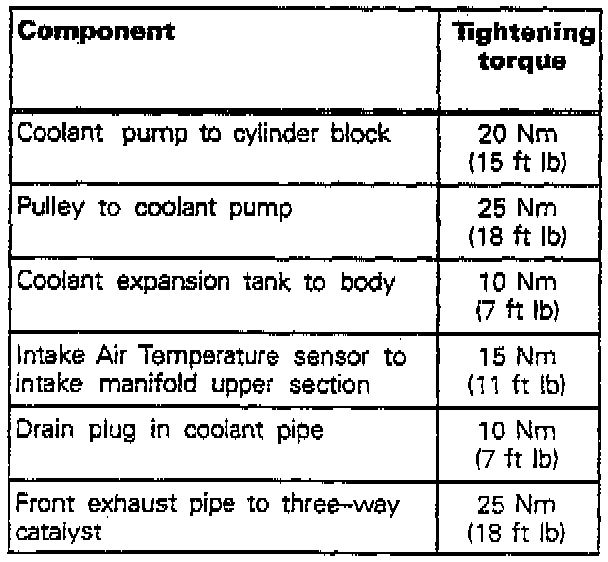

Water Pump: Service and Repair
Coolant Pump, removing and installing
Removing
- With ignition switched off, disconnect battery ground cable.
NOTE: Obtain the radio anti-theft code from the customer before disconnecting the battery.
- Disconnect exhaust pipe from the flange on the three-way catalyst Service and Repair
- Drain coolant Service and Repair
- Remove ribbed drive belt Service and Repair
- Remove intake air duct


- Disconnect spark plug cables from ignition coil and unclip from the cable guide -2-.
- Remove the high tension wiring guide -2-
- Disconnect vacuum hose between upper intake manifold and fuel pressure regulator
- Remove intake air temperature sensor from upper intake manifold
- Detach coolant expansion tank and place to side; hoses remain connected.

- Fit engine support bracket tool No. 10-222 A with adapter tool No. 10-222A/3, or equivalent.
- Locate support bracket in lifting eyes on left and right of cylinder head and take up weight of engine.
- Detach transmission at left rear assembly mounting and engine at right rear assembly mounting.

- Detach engine from front engine/trans mount from above.
- Carefully lift engine.
- Using a modified coolant pump pulley wrench tool No. VAG 1590, remove coolant (water) pump pulley.
NOTE: If necessary modify coolant (water) pump wrench.
- Remove coolant pump.
NOTE: To remove and install the coolant pump, push engine by hand slightly to left, to gain clearance for removing and installing.
Installation
- Installation is the reverse of removal, noting the following:

- When installing the rear right and front engine/trans mounts, ensure that the recess on the rear right console and the recess on the front console locates on the rubber mount -arrows-.
- Screw in all bolts on engine/trans mounts by hand approx. 5 to 6 turns.
- Align engine mounts stress-free by rocking engine assembly.
- First tighten motor mountings front and rear right, then tighten rear left assembly mounting.
- Install intake hose.
- Installing ribbed drive belt Service and Repair
- Fill with coolant Service and Repair

- ighten components as shown in the illustration.